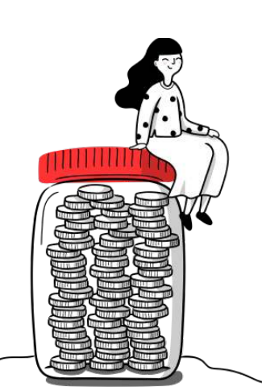
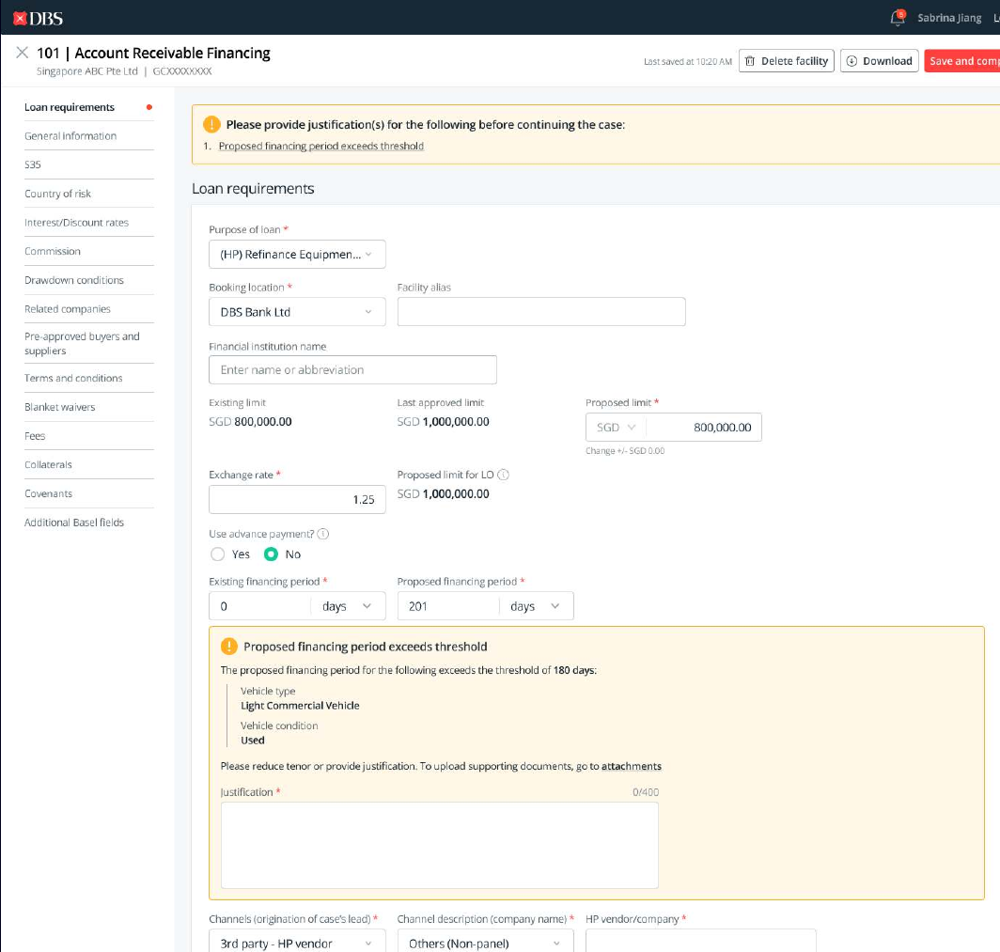

01 / Context
A high-value service slowed down by fragmented operations.
Enterprise loan applications moved across nine user groups and took three weeks to one month—sometimes more than three months. DBS aimed to reduce the time to offer to two weeks through one consistent platform.

How a case begins
From customer request to funds.
- 01Customer approaches the bank
- 02RM checks eligibility and applies
- 03Credit approves; support processes documents
- 04Funds are disbursed
02 / The bottleneck
Relationship managers spent hours assembling evidence before they could make a decision.
Systems and documents
Pre-screening required switching between as many as 11 sources to understand a customer’s eligibility.
Eligibility checks
Manual research and calculations happened before a manager could confidently propose a loan.
Possible fields
Manual entry increased effort and introduced downstream data errors, failed checks and rework.
03 / Discovery
Mapping the work—not just the interface.
I led the pre-approval design stream, working with product, business analysts, content, technology, subject-matter experts and end users. Stakeholder workshops revealed how a case crossed departments and where offline tools filled gaps in the main system.
Remote interviews and workflow observation showed navigation that did not match the job, layers of underused data, unclear terminology and frequent detours into external tools. Comparing three internal loan systems also surfaced patterns that could be standardized.
How might we speed up eligibility checks while ensuring applications are accurate and complete—so teams can focus on cases with a higher chance of success?
04 / Solution framework
One system. Four steps. Eligibility before submission.
The new flow replaced repeated cross-system checks with auto-pulled data, embedded calculations and immediate feedback.
- 01Create a case
Search for the customer and use a unique identifier to retrieve relevant records.
- 02Review pre-screening
See auto-pulled results and stop early when a case is not eligible.
- 03Propose the loan
Work with consolidated data and embedded pass/fail calculations.
- 04Check eligibility
Understand results in real time before sending the case downstream.
Target for pre-screening checks: from 1–3 hours to 5 minutes
05 / Design response
Make complex lending rules visible and actionable.
I restructured the information architecture around the relationship manager’s workflow, then consolidated exposure data, facility limits and collateral into one view. Real-time visualizations helped managers understand remaining headroom without rebuilding calculations elsewhere.
Eligibility rules were surfaced during application—not after submission—so managers could resolve exceptions or provide justification while context was fresh.

Exposure and limits in one place
Dynamic calculations and visual cues replaced manual comparisons across multiple tools.

Resolve eligibility issues in context
Inline checks exposed threshold failures early and guided users toward the next action.
06 / Usability validation
The core flow worked. Findability and language still needed iteration.
Remote sessions tested a realistic loan-proposal scenario with relationship managers. Results indicated strong task comprehension, alongside clear opportunities to improve collateral discovery and call-to-action wording.
The study also found that 33.3% could not locate some data efficiently and 33.3% did not understand a CTA. These findings informed further iteration; the PDF does not report production impact.
07 / Reflection
Designing the workflow meant designing across organizational boundaries.
A small interaction change upstream could affect several teams downstream. The work required continuous alignment across business, technology and design, while learning a complex lending domain quickly enough to challenge legacy assumptions.
With more time, I would have run additional validation rounds and studied the emotional side of internal tools—not only whether the product was usable, but whether it gave users confidence while handling high-value decisions.